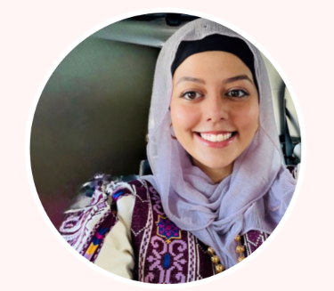

About Me
I am Beesan Jian, a Software Engineering student at An-Najah National University in Nablus, Palestine.
I am a strategic and detail-oriented person with experience in program coordination, administrative support,
and cross-functional communication. I can manage complex schedules, drive project execution, and support
leadership in fast-paced environments. I am fluent in English and comfortable with modern productivity tools
including Google Workspace, Notion, calendar management, and remote collaboration platforms.

Experience
I have worked in teaching, program coordination, and customer service roles.
Part-Time English Teacher (4th Graders)
Pioneers Baccalaureate School | September 2025 - December 2025. I planned and delivered
lessons to foster engagement and language development. I managed classroom dynamics and
adapted teaching methods to different learning styles. I also communicated regularly with
parents regarding student progress and needs.
Lead Ambassador - Virtual Exchange Program
An-Najah National University | August 2022 - May 2024. I managed program operations for
100+ students, coordinating registration, timelines, and participant tracking. I led
orientations for prospective students on program expectations, benefits, and participation
requirements, and mentored students throughout the virtual exchange. I organized recognition
ceremonies and events to honour participants and faculty, and trained new ambassadors while
creating follow-up systems to ensure student success and satisfaction.
Customer Service and Operations Associate
SACARA (Local Cosmetics Store) | May 2021 - October 2022. I handled customer complaints
with empathy and resolution-oriented communication, and participated in operational
meetings to contribute to new process improvements. I managed inbound calls, emails, and
face-to-face client interactions, and maintained database accuracy for inventory and
customer records while solving problems under pressure in a fast-paced retail environment.